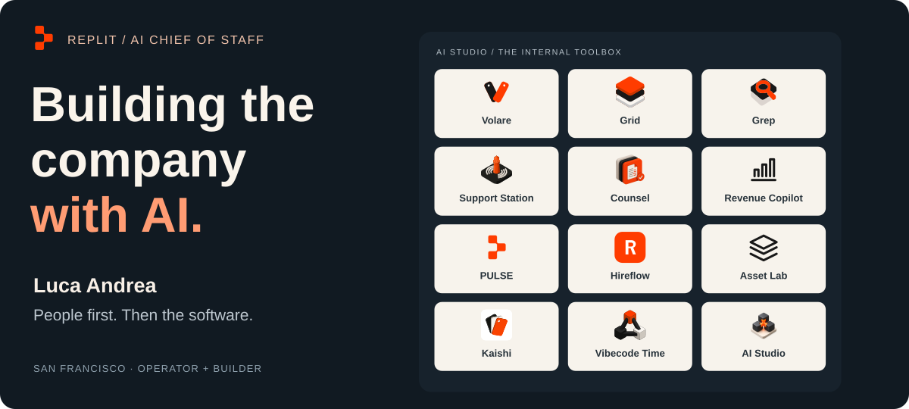
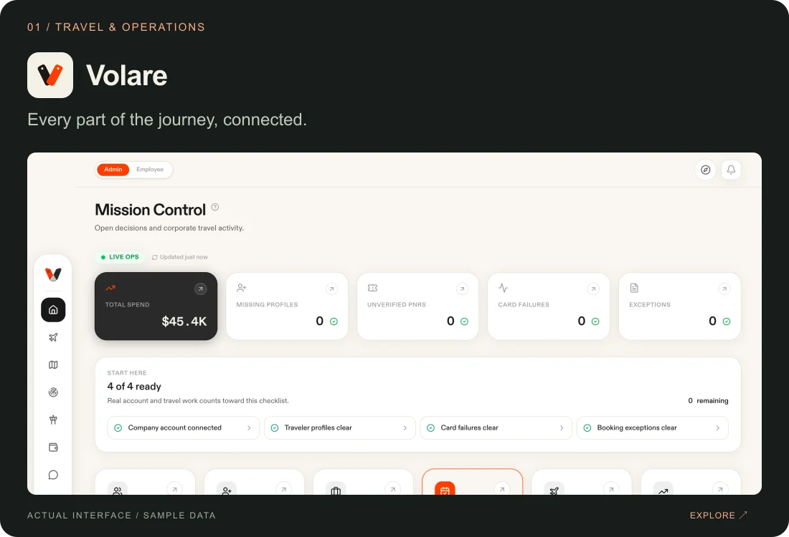
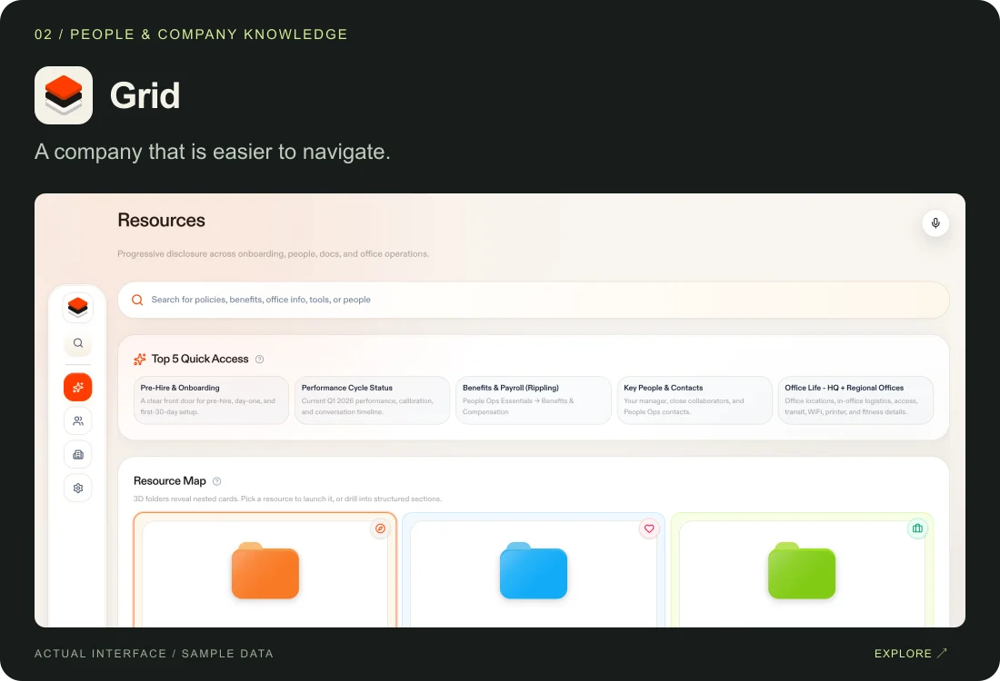
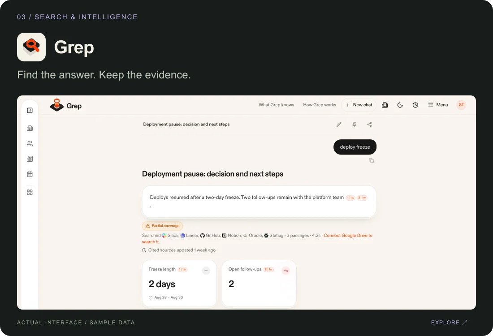
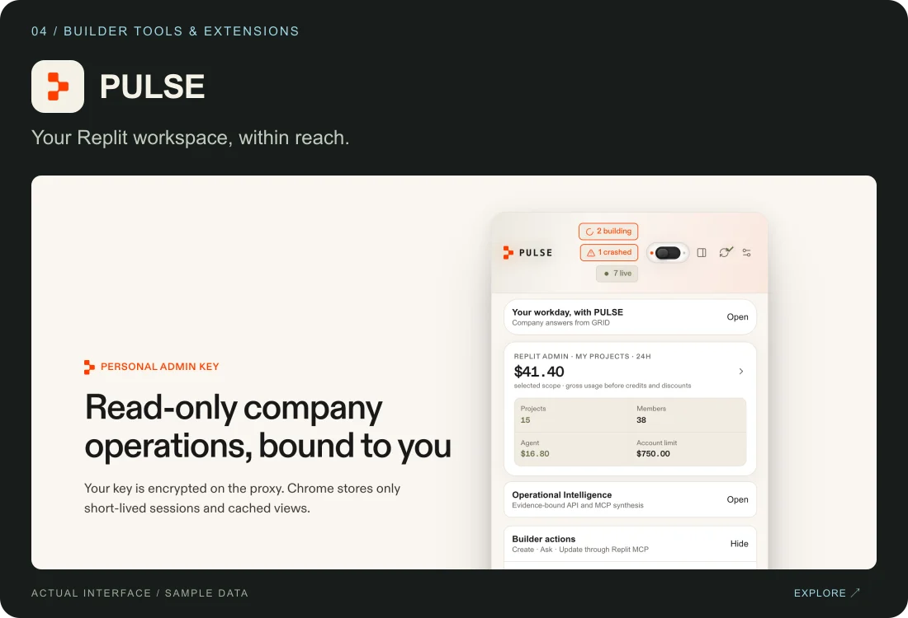
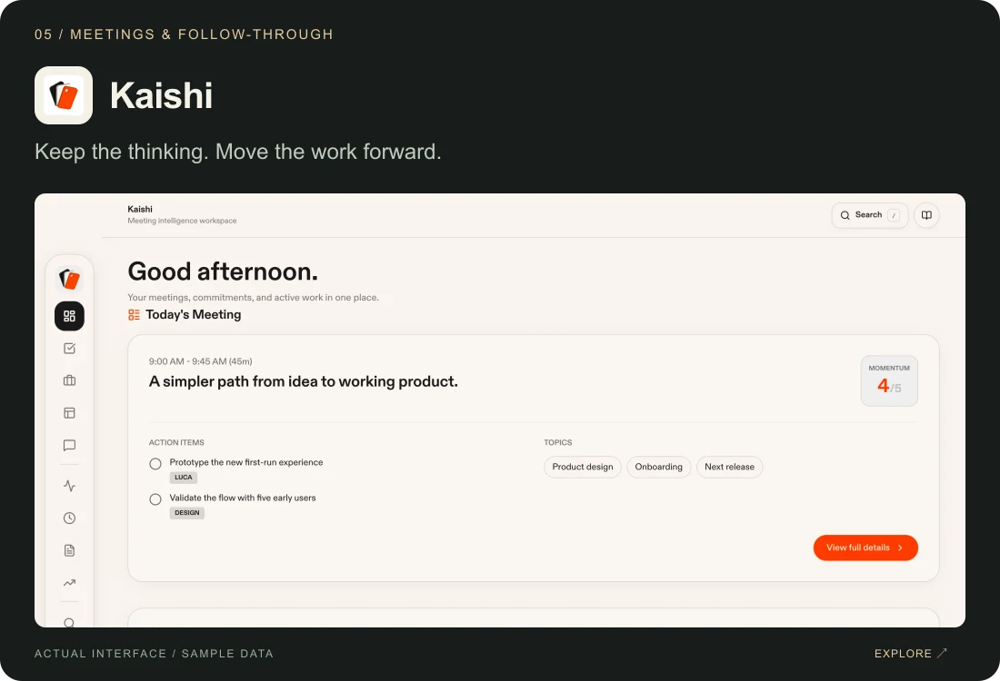
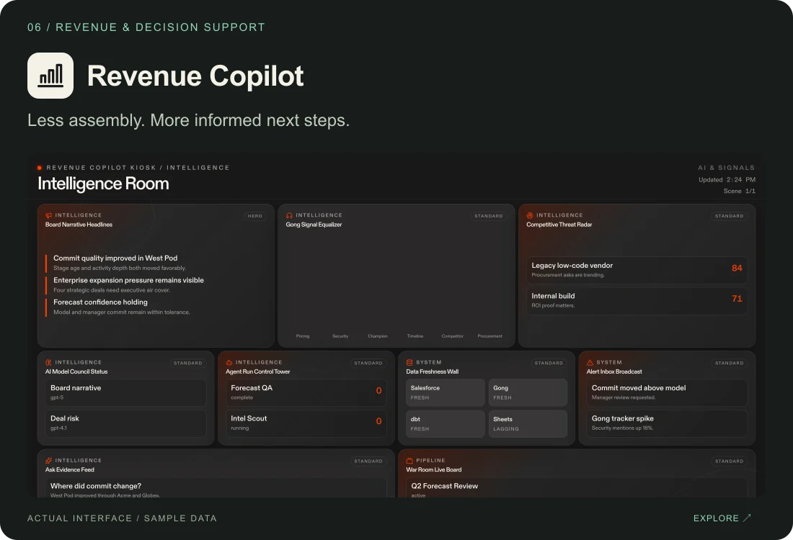

Explore my portfolio ↗ · LinkedIn · X / @agi2asi · Say ciao
Ciao, I'm Luca.
I'm Luca, AI Chief of Staff at Replit, based in San Francisco. I work where operations, AI, and product design meet: finding the friction, imagining a better experience, and building the tools to make it real.
I care about the whole thing: the person using it, the workflow behind it, the interface, and what happens after the first version ships.
Built around the way people work
A selection of my work across the AI Studio portfolio. Different teams, different problems; one instinct to make the next step easier.
 Volare ↗ Travel, approvals, hotels, and the unexpected — connected across web and native iOS. |  Grid ↗ A front door to company knowledge: people, resources, teams, and places. |
 Grep ↗ Company search that keeps sources, context, and access attached to the answer. |  PULSE ↗ Replit building and workspace intelligence, closer to hand in Chrome and Raycast. |
 Kaishi ↗ Meeting capture, searchable context, and follow-through that survives the conversation. |  Revenue Copilot ↗ Pipeline, forecasts, account research, and the context behind the next decision. |
Real product interfaces from my public portfolio, shown with sample or demo data. Explore each project for more context.
The way I build
Start with a person. Follow the workflow. Make something useful. Keep improving it.
AI helps me move between an idea and a working product. Product judgment is deciding what deserves to exist, how it should feel, and what makes it worth coming back to.
A few things I keep coming back to
- People first. Understand the work before deciding where AI belongs.
- Design the whole experience. The interface, permissions, handoffs, and small details all count.
- Keep the evidence. Useful answers should come with sources and visible decisions.
- Stay after the prototype. Feedback, teaching, maintenance, and ownership are part of building.
Across the workbench: Replit · TypeScript · React · Python · SwiftUI · PostgreSQL · AI agents & MCP
Curiosity doesn't clock out
Cars, music, native apps, connected devices, and a more personal web. The things that catch my attention tend to become things I build.
LucaOS · Targa Fuel · Music Lab
Also on my public workbench: my forks of Free Sleep and the Muse Gadget SDK, exploring software that reaches into the physical world.
Advisory & working sessions ↗ · Field notes · AGI2ASI
Profile controls
Edit this page · Edit bio & portrait · Unpublish / republish
Only the account owner can make changes. Quick guide.